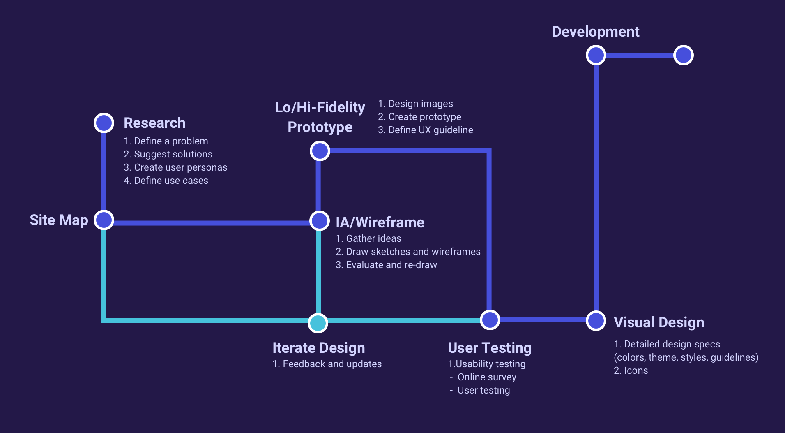
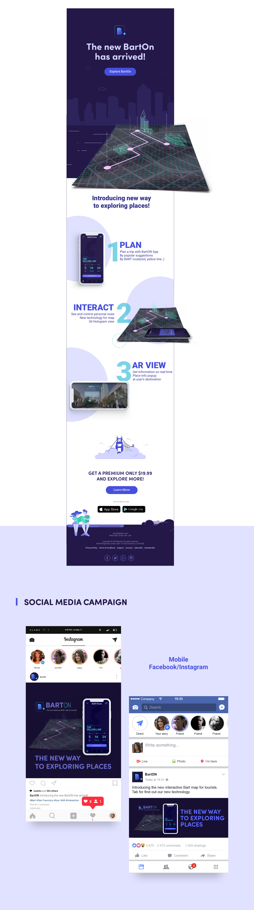
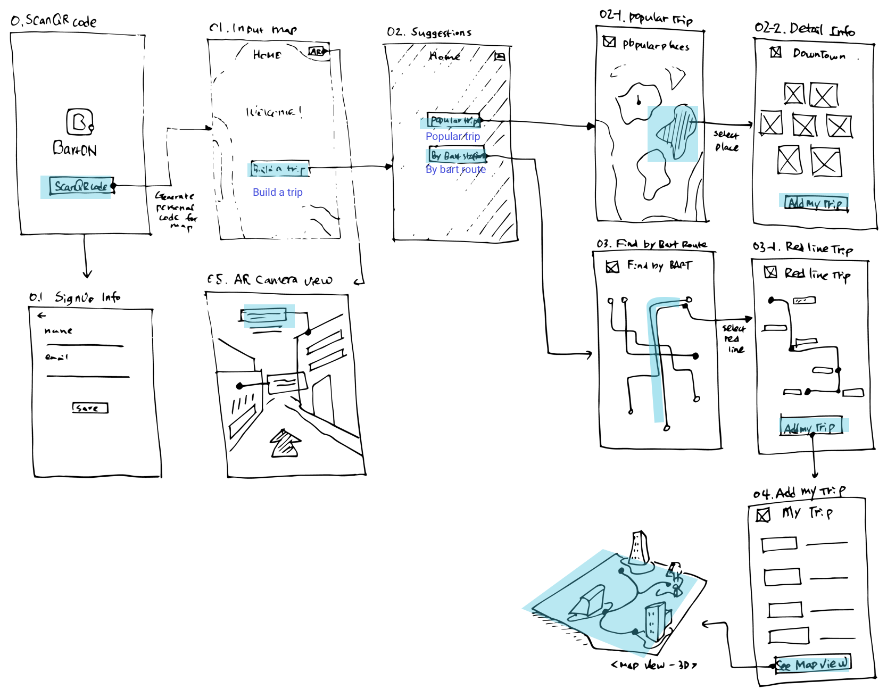
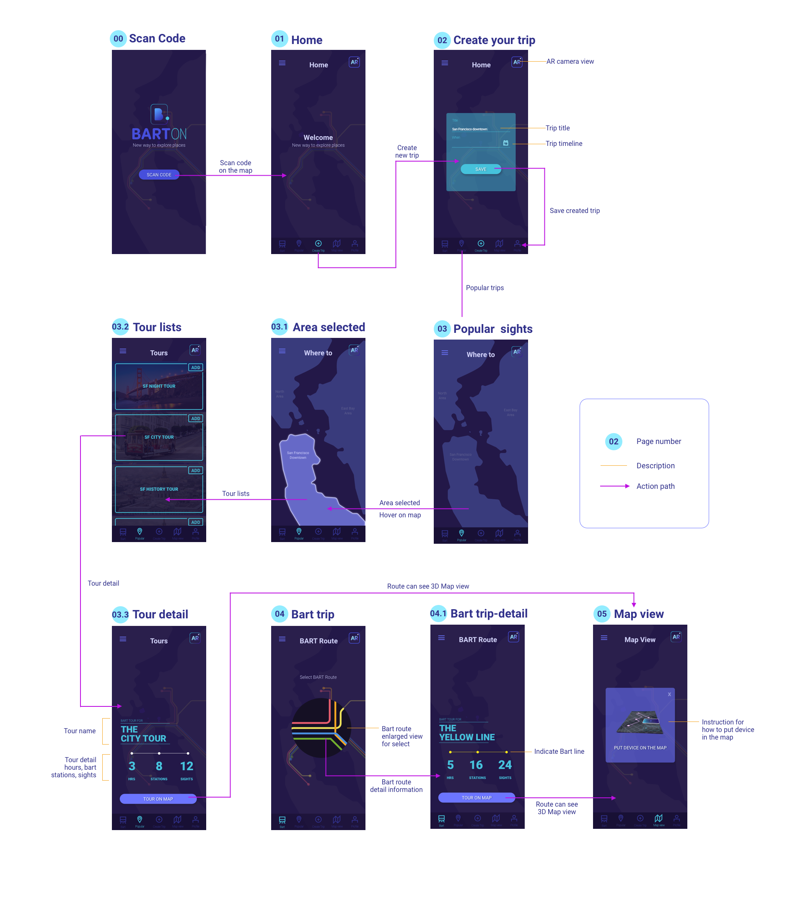

Project Overview
The public transportation is one of the easiest way for travelers to explore new places. This case study provides travelers a new way to explore Bay Area using Bart Transportation. BartOn is a new mobile application leveraging AR(Augmented Reality) technology for travelers. Travelers who planned a day or a week trip can check their trips with new interactive BART map. The map shows 3D perspective view of attractions and user’s tour route. When travelers get to the place, the app shows the information of attractions using AR technology.
Key Features

Task
BART is a public transportation of San Francisco where runs on bay area and San Francisco downtown. Many tourists visiting city use Bart, but the Bart map is often outdated and difficult to read. Tourists look for a guidance to make their tour plan better but it is difficult to get all the information because there are many different sources. The application can boost the local economy by providing information to tourists and local resident.
Solution
The application will leverage AR (Augmented Reality) technology to provide all the information. Users can see the information on the map and mobile application. Tourists make a tour plan on mobile app and get a physical map at the BART station. The app not only shows user’s own tour plan and direction to destination, but also presents attractions visually using 3d simulation.
Tools

Design Process
User Story

Design Lists

Persona

Research:
Here are researches for benefits of wayfinding using 3d floor plan.
"They have tested with small focus-group and below is the short summary 3D floor plans give a good overview of your location. With 3D users see the map the way they see the building in real life. It is possible to show the details, that people use for orientation inside building. It gives a better understanding of where you are and it is easier to link the map with a real building. It is easy to understand which floors have atriums and distinguish between things on different plans. Pathfinding is simple and 3D gives a good visual overview for navigating from one floor to another. It is always possible to use camera view for path visualization."
- https://3dwayfinder.com/3d-vs-2d-wayfinding/
Application Map

Brand System
Energetic (Tourism) + Connected (Transportation)


Style Guide
Newsletter and Social media
For BartON promotion, I targeted on the awareness stage where users do not know about our app yet. I focused on introducing our key features and encouraging users to get our new app. The app can be also downloaded by scanning the code on the physical bart map in the BART station. Our target audiences are young, like to travel and eagar to try new things. Social media is the best tool for advertisement. Users can see how app works by simple animation.
Sketch Wireframe
Lo-Fi Wireframe
I created wireframe based on the key features. First, make the tour plan. Second, users can see 3d hologram on the map view and lastly, when users arrive the destination they get informations using AR camera. I did sketches first and make low-fidelity wireframe. Based on the user testing, Here are final design layout for wireframe.
Hi-Fi Wireframe
Final Application Design


Resources
https://www.slideshare.net/GeoVIS15 https://www.pixeden.com/psd-mock-up-templates https://designshack.net/articles/inspiration/50-apple-watch-mockups-graphics/ https://en.wikipedia.org/ https://www.unsplash.com https://www.pngtree.com https://www.pexels.com/search/people/ https://3dwayfinder.com/3d-vs-2d-wayfinding/